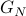

|
Mustafa Cemil Coşkun
About me
I am an AI/ML wireless researcher of a department lead by Dr. Jinfeng Du at Bell Labs of Nokia. I received the Dr.-Ing. (Ph.D. equivalent) degree in electrical and computer engineering in 2022 from the Technical University of Munich (TUM), where I was very fortunate to be advised by Prof. Dr.sc.tech. Gerhard Kramer. During the course of my graduate studies, I was also a member of the Information Transmission Group lead by Dr. Gianluigi Liva at the German Aerospace Center (DLR) between 2016-2020. In addition, I visited the Rhodes Information Initiative at Duke (iiD) at Duke University for six months from 2019 to 2020, where I was hosted by Prof. Henry D. Pfister.
Prior to that, I received the B.Sc. degree in electrical and electronics (EE) engineering from Boğaziçi University (BOUN) and the M.Sc. degree in communications engineering (MSCE) from the TUM in 2014 and 2017, respectively (both with summa cum laude).
I am grateful for supports from TEV, DAAD, Munich Aerospace and DFG.
Research Interests
My broad interests include applied probability, information theory and coding theory with applications to wireless communications. In particular, I enjoy developing and implementing algorithms for inference in graphical models appearing in communications. In the course of my Ph.D. studies, I focused on the design of polar(-like) codes and their low-complexity decoding. This includes also non-coherent receiver designs for block-fading channels, where my techniques aim at joint channel estimation and decoding of short codes. You can find my doctoral thesis here.
Recent News
Oct., 2022 - Very happy to join Bell Labs.
Sep., 2022 - Successive Cancellation Decoding of Single Parity-Check Product Codes: Analysis and Improved Decoding accepted at IEEE TIT.
Apr., 2022 - Happy to successfully defend my doctoral thesis.
Apr., 2022 - An Information-Theoretic Perspective on Successive Cancellation List Decoding and Polar Code Design accepted at IEEE TIT.
Mar., 2022 - Humbled to be recognized as an Exemplary Reviewer by IEEE TCOM.
Dec., 2021 - Successive Cancellation Ordered Search Decoding of Modified -Coset Codes submitted to IEEE TCOM.
Nov., 2021 - It was a pleasure to be invited at Short Packet Transmission for Wireless Communications. The slides can be found here.
Nov., 2021 - Happy to have another German patent granted with the number DE102020128918B3, which is a joint work with my colleague Peihong Yuan and doctoral advisor Gerhard Kramer.
Nov., 2021 - Very happy to submit my dissertation titled “Code Analysis and Design for Successive Cancellation List Decoders”. Stay tuned for the defense date!
Oct., 2021 - Honoured to chair the session “Coding Theory and Practice” at IEEE ITW.
Oct., 2021 - Complexity-Adaptive Maximum-Likelihood Decoding of Modified -Coset Codes was presented by my co-author Peihong Yuan at IEEE ITW and a recording can be found here.
Sep., 2021 - Happy to give a tutorial titled “Optimum Decoding of Modified Polar Codes: From Inactivation Decoding to Tree-Search” as a part of summer school for Ph.D. candidates offered by Prof. Gerhard Kramer and Prof. Ralf Müller. The slides can be found here.
Jul., 2021 - I gave a talk titled “Polar Code Design for SCL Decoding: An Information-Theoretic Perspective” at COCO 2021. The slides can be found here.
May, 2021 - It was a pleasure to be invited at The 35. Meeting of ITG Professional Group Applied Information Theory. The slides of my talk can be found here.
|